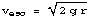
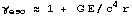
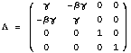
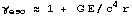
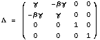

For Folks
The New York Times article in column one describes the excitement generated by an experiment to measure the bending of starlight during a solar eclipse.
Newton's law of gravity predicts that light will fall toward the Sun during the time the light passes by the Sun. Einstein's theory of gravity, general relativity, predicted that both space and time fall toward the Sun, so the amount of bending will be twice as large. The British astronomers in Chile demonstrated Einstein was right (as usual!).
Einstein in 1931 looks at a 1991 eclipse. The difference in the position of stars between Newton's and Einstein's prediction is less than the size of a period.
The typed equation on the bottom right shows how physicists calculate the bending of starlight by the Sun. The handwritten equation on the left is the artist's method to that result.
For Nerds
The most famous experimental test of general relativity is the bending of starlight during a solar eclipse. I will use the Lorentz group, the main tool of special relativity, in a new way to get the same result.
The gravitational fields for a bound test mass are characterized
by a member of the Lorentz group in the following manner: take the Newtonian
orbital velocity,,express it relativistically, and , and use , a member of the
Lorentz group.
and , and use , a member of the
Lorentz group.
The experiment is about the apparent difference in the location of a star with and without the Sun's gravitational field. With the Sun, the field perpendicular to the flight of the photon is characterized by a constant Lorentz matrix. Without the Sun, the identity matrix characterizes empty space. Integrate the trace of the difference between the two matrices over a bilaterally symmetric interval since bending bending in is equal to bending out. This gives the correct algebraic result.